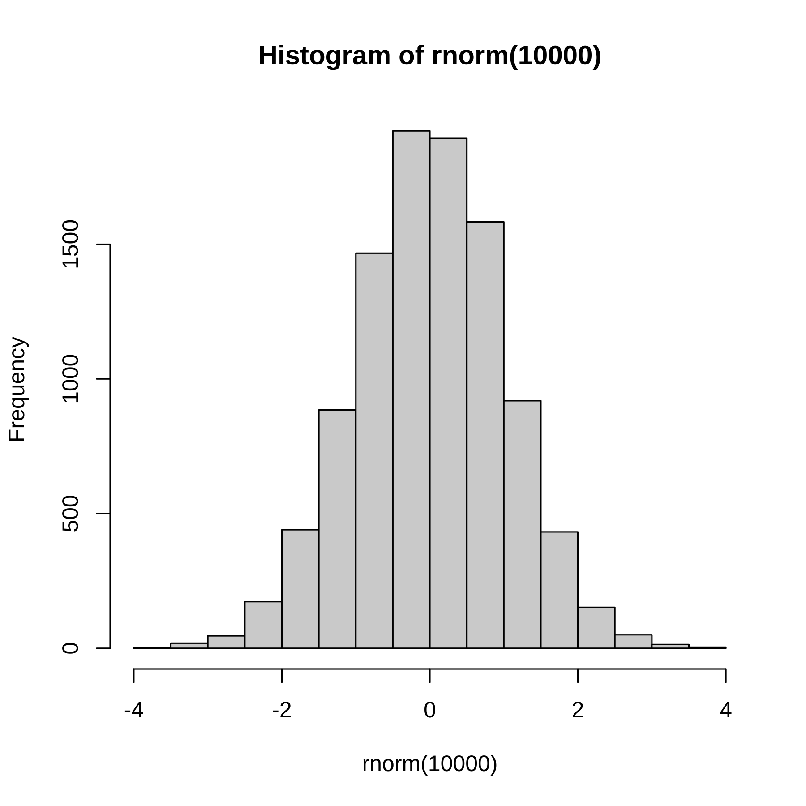

Capítulo 9 - MLE
9.1 Estimação por Máxima Verossimilhança
Além do método de Mínimos Quadrados Ordinários, podemos estimar os coeficientes de regressão pelo método de Máxima Verossimilhança, que é uma tradução ruim do inglês de Maximum Likelihood. Para isso, precisamos adicionar uma suposição ao nosso modelo de regressão:
- Os erros \(e_i \sim N(0, \sigma^2)\) e são independentes de \(X\).
- Os erros são independentes entre observações.
Uma consequência dessas suposições é que a própria variável resposta \(Y\) torna-se independente entre observações, condicional aos preditores. Podemos então computar a probabilidade condicional de observar os dados de nossa amostra \(y_i\), condicional aos \(x_i\) e aos parâmetros da equação de regressão, \(\alpha\) e \(\beta\) e a variância \(\sigma^2\). Como as observações são independentes, a probabilidade conjunta é o produto das probabilidades marginais. A verossimilhança é uma função dos parâmetros para essa probabilidade conjunta. Então, meu objetivo é escolher valores dos coeficientes que maximizem a probabilidade de observar os dados.
Com a suposição de normalidade dos erros acima, é possível mostrar que os estimadores de Máxima Verossimilhança são iguais aos de MQO.
A vantagem de estimar por Máxima Verossimilhança é que agora temos uma distribuição amostral para nossos estimadores e, portanto, podemos fazer inferências sobre ele.
É possível mostrar que: \[ \hat{\beta} \sim N(\beta_1, \frac{\sigma^2}{n \cdot s_x}) \]
9.2 Teste de hipótese
Nesse caso, o típico teste de hipótese que é feito em um modelo de regressão é testar a hipótese nula de que \(\beta_1 = 0\). Sob a suposição de que isso é verdade, \(\hat{\beta} \sim N(0, \frac{\sigma^2}{n \cdot s_x})\). E se quisermos cometer o erro de rejeitar a hipótese nula (isto é, rejeitar que \(\beta_1 = 0\)) no máximo 5% das vezes, se eu colhesse novas amostras repetidas vezes, então posso calcular se rejeito ou não minha hipótese nula ao nível de 5% de confiança.
Vamos ver um exemplo a partir de dados de um survey no Reino Unido sobre o Brexit.
| variable_id | item_text |
|---|---|
| vote | vote: intenção de voto no referendo do Brexit: ‘sair’, ‘ficar’, ‘não sabe’, ‘não votará’ |
| leave | leave: identifica quem vai votar ‘sair’ (1) ou ‘ficar’ (0). Não sabe ou não irá votar é NA |
| education | education: 1 = sem qualificação, 2 = ensino médio, 3 = mais que ensino médio, 4 = ensino superior, 5 = pós-graduação, NA = sem resposta |
| age | idade |
9.3 regressão
reg <- lm(leave ~ age, data=bes, na.action = na.omit )
stargazer::stargazer(reg, type = "html", style = "ajps",
title = "Regressão linear - Brexit", omit.stat = "f")| leave | |
| age | 0.007*** |
| (0.0002) | |
| Constant | 0.119*** |
| (0.009) | |
| N | 28044 |
| R-squared | 0.058 |
| Adj. R-squared | 0.058 |
| Residual Std. Error | 0.485 (df = 28042) |
| p < .01; p < .05; p < .1 | |
Nós vemos que pessoas mais velhas tenderiam a votar 1 (sair).
## [1] 14## [1] 28## [1] 56O p-valor é a probabilidade de eu observar dados tão ou mais extremos do que o observado, sob a suposição de que a hipótese nula é verdadeira. O erro padrão é \(.0002\), ou seja, supondo normalidade (MLE), o p-valor é aproximadamente zero:
## age
## 41.44094## age
## 0 E se o p-valor é menor que o nível de significância (5%), então rejeitamos a hipótese nula de que o coeficiente é zero.
O problema desse tipo de teste de hipótese é que, à medida que o número de observaçoes cresce, sempre vamso rejeitar a hipótese nula. É muito raro que em ciências sociais o coeficiente de uma variável seja exatamente zero. Nesse sentido, é melhor utilizar o intervalo de confiança para quantificar a incerteza.
Aqui, podemos calculá-lo do seguinte modo: \(\hat{\beta_1} -1.96 \cdot se; \hat{\beta_1} + 1.96 \cdot se = [0.007 - 1.96 \cdot 0.002; 0.007 + 1.96 \cdot 0.002] = [0.003; 0.01]\).
## [1] 28## [1] 12## [1] 40Na prática podemos calcular de cabeça multiplicando por \(2\) o erro-padrão e vendo se o coeficiente cruza o zero quando somo ou subtraio.